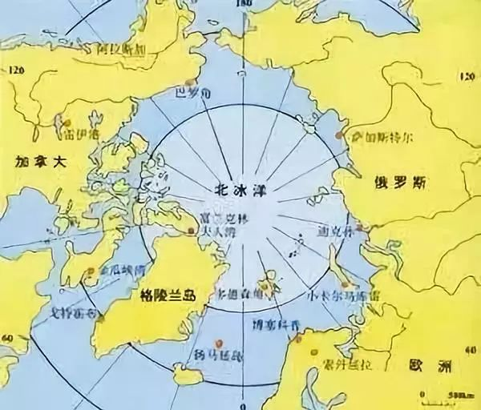
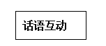
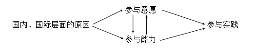
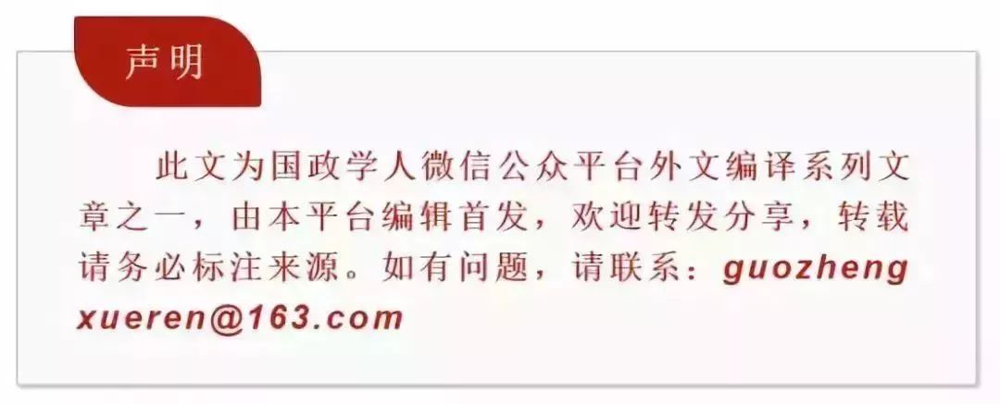

收录于合集

简 介
【作者介绍】 孙凯，现为中国海洋大学国际事务与公共管理学院教授、副院长，泰山学者青年专家
【本文来源】 《世界经济与政治》2014年07期
【编辑】 曲雅倩
【审核】 褚峰熠 李源
内 容 提 要
中国北极理事会观察员身份的确立，是近年来中国在实践中积极参与北极事务、中国和国际社会对“中国参与北极事务”话语的互动以及国际社会对中国作为“北极利益攸关方”身份承认的结果。中国在北极事务中的参与实践与中国的参与意愿、参与能力直接相关，中国参与北极事务意愿的增强和中国参与能力的提升促进了中国实质性参与北极事务的深度提升和广度拓展；而国际社会尤其是北极国家对中国在北极事务参与实践的认知经历了从“恐慌”到欢迎的转变 。 在此进程中，中国积极塑造和传播中国参与北极事务正面的国际话语，应对和驳斥“中国北极威胁论”等负面话语，为中国在北极事务中的参与实践创造了良性的国际舆论环境。 随着中国在北极事务中参与实践的拓展和参与能力的增强以及中国对北极事务立场的阐释与 “北极外交”的沟通，国际社会对中国北极事务参与实践的认知趋于积极和正面，中国参与北极事务的渠道更为顺畅，中国已经成为北极事务治理进程中不可或缺的积极参与者。
关 键 词
中国参与北极事务；北极利益攸关方； 话语互动；北极治理；全球治理
**
**

** 一.问题的提出**
2013年5月15日，北极理事会（Arctic Council）第八次部长级会议在瑞典的北方城市基律纳召开，中国北极理事会观察员资格的申请获得批准，自此结束了中国以特殊观察员身份（ad hoc observer）参与北极理事会事务的历史。中国自2006年就开始申请北极理事会正式观察员资格，历时七年方获批准。这是二十多年来中国参与北极事务的实践能力不断增强、 国际社会对中国在北极事务中的参与实践予以认可以及中国作为北极事务“利益攸关方”身份得以确认的结果。随着中国北极事务参与实践的深化与能力拓展，国际社会也越来越认识到北极事务的有效治理离不开中国的积极参与。
传统上的北极国家仅包括在北极圈内拥有领土和领海的八个国家。从狭义的地理范围的角度来看，中国并不是一个北极国家。 在相当长的一段时期内，北极地区事务的治理也仅是北极周边国家的事务，较少有域外国家参与。但随着全球气候变化影响的加速、世界经济相互依赖性的增强以及北极治理机制 “扁平化”趋势的显现，北极地区的变化以及北极地区事务的有效治理越来越与外界密不可分，进而导致北极地区事务的全球化以及对北极事务治理的国际化。这种国际化主要表现在两个层面的相互交织：第一，域外因素（全球气候变化以及经济全球化）是导致北极地区变化的主要动力来源，并且北极地区的变化也深刻影响着北极之外的地区。第二，北极地区事务的全球性特征决定了北极事务的有效治理离不开域外国家的实质性参与。
**作为日益崛起的大国，中国近年来更为积极主动地参与全球治理， “参与的力度不断加大，积极性、自觉性提高”。在北极事务问题，主要表现在中国参与北极事务意愿的增强、能力的提升与领域的拓展以及北极地区有效治理对中国参与需求的增长等。**2013年10月，在加拿大白马市出席北极理事会秋季高官会议的中国外交部条约法律司副司长贾桂德表示，“中国有意愿也有能力为北极事务做出贡献，促进北极地区的和平、稳定和可持续发展”。中国参与北极事务引发了国际社会的关注，其中不乏“中国威胁论”在北极事务中的翻版，对中国在北极事务中的参与进行曲解和误读。 这与中国以负责任大国的形象构建和谐世界、实现北极事务有效治理的理念和国家形象是不相符的。随着中国北极事务参与实践能动性的加强与中国北极国际话语权的主动构建与提升，中国在北极事务中的形象日趋积极与真实，进而中国与北极的关系更为紧密，中国在北极治理机制中的参与更具广泛性与实质性，中国作为“近北极国家”以及北极事务“利益攸关方”的身份得以承认。
在中国参与全球治理的程度日益加深的背景下，我们考察中国在北极事务中的参与进程，可以回答以下问题： 中国在北极事务中积极主动的参与实践如何推动北极地区的有效治理？中国在参与北极事务的进程中如何构建与提升中国的国家形象与国际话语，进而为中国参与北极事务创造良好的国际舆论环境？ 对于这些问题的回答，既有一般性的理论意义，也有具体的现实意义。在理论方面，对中国参与北极事务进程及这一过程中的“话语互动”进行分析，对于理解在中国参与全球治理的进程中，中国作为“域外者”如何有效参与传统意义上的区域事务及在参与进程中如何强化“参与实践”，向世界有效地传输中国参与全球治理的国际话语和治理理念，为中国不断扩大和深入地参与全球治理提供一般意义上的理论解释和经验借鉴。中国参与北极事务治理研究的众多文献中，很少有学者将北极事务话语权的争夺与互动纳入研究的分析框架。本文基于已有文献研究的基础上，以中国参与国际治理的参与实践理论为主体框架，对中国参与北极事务进程中的话语互动进行系统的考察，通过中国参与北极事务个案的分析，有助于理解和发现中国参与国际治理进程中的国际话语权之争及中国的制胜之道，从而在实践中进一步推动中国在北极地区事务乃至全球事务治理中的参与。
** 二. 国内外研究评述**
随着北极地区变化的加速以及北极日益“融入世界”，北极事务问题被国际社会和学者们“重新发现”之后，国内外不少的学者从北极事务体系的宏观层面或者从北极事务相关的议题领域等微观层面对北极治理进行了研究。早期的研究领域大都集中在北极地区的环境治理、北极航运及其国际管制、北极地区资源开发前景与可行性以及北极地区原住民事务的治理等。在这些研究中，一些学者也专门论及中国参与北极事务的问题（有时候对中国参与北极事务的研究被纳入“东亚/亚洲国家与北极”的框架之内）。总体而言， 国内外学者的研究集中在以下三个问题：第一，中国在北极地区的利益是什么？第二，中国参与北极事务的法律依据是什么？第三，中国参与北极事务会产生什么样的影响？
（一）中国在北极地区的利益是什么
**
**
作为传统意义上的 “非北极国家”，中国对北极地区的兴趣以及中国在北极事务中的参与，引发了国内外学者的关注：为什么中国对北极地区感兴趣？中国参与北极事务的目的是什么？中国在北极地区的利益是什么？斯德哥尔摩国际和平研究所（SIPRI）2010年发布的题为《中国为无冰北极做准备》的报告是较早对中国参与北极事务进行系统研究的英文文献，报告认为由于气候变化所导致的北极冰融以及北极地区航道开通和资源开发的前景，促使中国给予北极越来越多的关注。在2012年，SIPRI 又发布了题为《中国的北极之梦》的报告，从经济、治理和法律三个方面分析了中国参与北极事务的动机，认为中国对北极事务的参与日趋积极。中国较早研究北极问题的学者郭培清认为，北极对于中国的利益主要包含四个方面：环境、科研、资源和航道。具体而言，即北极地区的环境变化影响着中国的气候和降水，中国在北极地区进行的科考活动说明北极对于中国的科考价值，北极地区所蕴藏的丰富的资源对于中国意义重大，北极航道的通航和管制直接影响中国的航运和经济发展。美国海军战争学院（US Naval War College）的安德鲁Ÿ埃里克森（Andrew Erickson）认为中国对北极事务的参与意在北极地区丰富的能源。
也有学者从国家安全利益的角度出发，认为北极地区的变化对中国具有重要的国家安全利益，尤其集中在北极地区的变化对中国非传统安全影响的方面。陆俊元认为，北极升温和海冰融化对中国的生态系统、粮食安全、产业发展和沿海地区安全等具有潜在的不利影响，北极地区对中国的能源安全具有重要的现实意义。夏立平也认为，北极环境变化事关人类未来的生存和发展，也关系到中国的国家安全。北极冰融将使中国恶劣天气增多，导致更多自然灾害，影响中国的生态安全和粮食安全。张胜军则更为关注中国国内能源消耗以及未来对能源的大量需求，认为北极地区丰富的石油资源和便利的海域航运对中国能源安全具有重大的战略意义，中国应从能源安全的角度重新认识北极。
（二）中国参与北极事务的法律依据是什么
**
**
既然中国在北极地区拥有上文所述的相关利益，中国参与北极事务的必要性就不言而喻。但是，作为传统意义上的 “非北极国家”，中国参与北极事务在国际法上有何依据？这一问题也引发了不少学者的关注。实际上， 尽管北极地区不存在宪法性的《北极条约》来统领北极事务的治理，但北极地区并非 “治理真空”，在不同议题领域以及不同的层面上，北极地区存在着的多重治理规制，共同构成了北极地区的“治理综合体”。在国际层面上与北极事务相关的国际规制，最为重要的就是被称为“海洋宪章”的《联合国海洋法公约》以及其他管理北极地区功能领域的相关条约，例如管理北极科学考察的《斯瓦尔巴德条约》（又称《斯匹茨卑尔根群岛条约》）以及应对全球性问题的《联合国气候变化框架公约》（ UNFCCC ）、《生物多样性公约》等。中国是以上公约的签署国，享有依据公约所带来的权利并负有相应的国际义务。
中国在北极地区依法所享有的权利，包括但不限于中国作为《斯瓦尔巴德条约》的缔约国，中国有进出该群岛地区从事科研及条约允许的相关权利；作为《联合国海洋法公约》的缔约国，中国有权进入北极公海地区进行科研等活动，并享有北极公海地区和区域的相关权利。韩立新、王大鹏认为，依据《联合国海洋法公约》的规定，中国在北极地区享有依据公约所规定的“航行权（自由航行权、无害通过权、过境通行权）、海洋科学研究权、海底使用权、海洋生物资源开发权、海上事故或事件调查权、海上搜寻救助权”等。
**
**
（三）中国参与北极事务会产生什么样的影响
**
**
国内外学者早期对中国参与北极事务中的研究往往比较偏激，其中比较有代表性的为加拿大加尔格里大学 (University of Calgary)的中国史学教授戴维Ÿ赖特（David Wright）对中国参与北极事务发表的一系列评论及研究报告。他通过考察部分中国学者和媒体对北极研究的言论，认为加拿大的北极地区拥有中国想要的自然资源和航运通道，中国可能更多地想在北极地区表达自己的声音，甚至中国想在北极地区“分一杯羹”，中国在北极事务中的参与将威胁到加拿大的北极主权。因此，对中国“日益增长的北极主权要求，加拿大必须奋起反击”。同在加拿大加尔格里大学任教的罗伯特Ÿ休伯特（Robert Huebert）也认为，北极地区“再现大国博弈状态”，“中国在北极地区的出现，改变了北极地区原有的地缘政治结构”。
与之相反的是“机会论”观点，例如加拿大拉瓦尔大学（University of Laval）的政治地理学教授弗雷德里克Ÿ拉塞尔（Frederic Lasserre）在《中国与北极：对加拿大来说是威胁还是合作机会？》一文中表述的看法。报告从经济利益视角进行分析，认为北极冰融之后可能出现的航道资源、自然资源等都引发了中国的兴趣。针对“中国正在积极参与北极资源的争夺”的说法，拉塞尔认为该情形目前并未出现，因为“中国从来没有对北冰洋、北极地区的专属经济区或者大陆架等提出要求”。在北极航道的国际地位问题上，拉塞尔通过与当时中国驻加拿大使馆新闻秘书以及中国驻挪威大使唐国强的交流，确认中国并没有发布关于东北航道地位的官方立场文件；尽管中国希望西北航道确保安全、高效，但中国的立场不会危及加拿大的北极主权；中国在主权问题上持中立的立场。
综上所述， 随着北极地区事务的全球化以及中国在北极事务中的积极参与，国内外学者对这一问题的研究也日益深入。但是目前国内外学界对中国参与北极事务的研究大都是以具体的议题为出发点，以政策建议为导向，较少有结合理论或者从理论的视角对中国参与北极事务进行研究，研究的理论化程度较低。而理论依据的缺失，难以使我们有效地理解和解读中国参与北极事务的深层逻辑，没有理论指导的对策建议也如沙滩上的城堡，难以经得起推敲。 面对国外学界和媒体对中国参与北极事务所出现的认知偏差以及有意识的曲解，中国学者也缺少有力的辩驳声音。而在当今的“软战时代”，提升中国国际话语权、消弭中国威胁论的任务尤为重要。鉴于此，本文力图构建一个包括中国在北极事务中的参与实践、国际话语互动以及对中国北极事务利益相关方身份承认为核心要素的分析框架，进而理解中国在北极事务中的参与进程。
** ** 三.参与实践、话语互动与 身份承认****
中国在北极事务中的参与，也是中国参与国际体系的一部分。因此，理解中国参与国际体系的理论模式，也可以解释中国在北极事务中的参与。随着近年来中国国力的增长，中国参与全球事务的能力逐渐增强，参与方式也更趋主动、积极。
理解中国参与国际体系的“实践模式”理论框架对于本文的研究具有很大的启发意义。构建这一框架的朱立群教授认为，中国参与国际体系是一个连续不断的参与实践过程，这个参与实践不仅受到国际、国内两个环境的影响，实践主体在参与实践的复杂互动中不断学习、借鉴、创新，形成关于国际体系及其相互关系的新的认知，并通过各种实践活动获得国际体系的承认，形成新的身份。参与实践是指实践者在一定的时空条件下参与国际体系过程的言语、行为活动。她将“参与实践”分为话语实践、联盟实践、学习实践、遵约实践、创新实践等。国际社会对参与实践的认可，最终体现在对中国国际身份的承认上。依据国际承认的不同程度，可以分为三种：一是基于代表权承认的形式承认，二是基于投票权和物质利益分享的分配承认，三是基于社会正义和尊严、平等、尊重基础上的价值承认。
这一框架对于从总体上理解中国参与国际体系，尤其中国在参与过程中的主动性方面有很强的解释力。实践者在一定条件的限制下通过学习、行动、表达等实践活动，接受体系的影响。实践者参与国际体系的过程实际上是在实践中重新塑造身份的过程，参与国际体系的结果体现在行为体的身份变化上。因而，对于行为体参与国际体系的进程，可以从行为体的身份演变中加以考察。换句话说，对实践结果的理解，必然通过对参与实践过程的了解以及对参与者身份变化的观察来获得。但这一理论框架将话语实践仅作为参与实践的一种类型，认为话语实践是实践者界定利益、赋予意义、框定认知的一个实践过程，是一个使主体观念变成主体间观念的过程。 本文认为在参与实践和身份承认之间，尤其在中国参与北极事务的这个个案中，国外对中国参与北极事务的错误认知以及中国有意识的话语纠偏，构成了不同话语之间的互动，因此有必要在这个案例中将话语实践及话语互动进行放大（如图 1所示），进而更为精确地理解中国参与北极事务的进程。

图1 参与实践、话语互动与身份承认因果示意图
中国参与北极事务的国内外话语互动，具体而言就是中国在北极事务中逐渐深化与拓展的参与实践基础上，国内外官方、学者、智库和媒体等对于中国参与北极事务的不同解读和话语表达以及在多种场合中这些不同话语之间的相互影响、竞争与说服。概而言之，依据是否有利于中国参与北极事务，可以将针对中国参与北极事务的国际话语和国内话语分为两类，即负面话语和正面话语，分别对应着中国在北极事务中各种类型的 “中国威胁论”和“中国贡献论”。这些话语在不同的场合进行互动，影响与塑造着国内外对中国参与北极事务的国际认知。
表1 国际话语和国内话语互动示意表
国内话语
国际话语
|
正面
|
负面
—|—|—
正面
|
相得益彰型
|
自我贬低型
负面
|
竞争与说服型
|
内外交困型
如表1所示，面对国外正面积极的国际话语，与国内正面积极的国际话语之间的互动会产生“相得益彰”的效果，这会为中国参与北极事务提供良好的国际舆论环境；而若国内话语仍然秉持“冷战思维”以及要在北极“分一杯羹”的负面话语，这不仅会给国外负面的国际话语的产生带来市场，也会逐渐销蚀国外正面积极的国际话语。面对国外负面的国际话语，国内层面的正面话语应积极行动，阐释与传达正面的信息，在国际层面与负面的国际话语形成竞争，实现说服或者“击败”负面国际话语的效果，进而能动性地创造有利于中国参与北极事务的国际舆论环境；而国内负面话语的传播则会与国外负面话语形成负面的“相辅相成”，成为国际社会误读中国的口实和把柄，从而使中国参与北极事务面临内外交困的被动局面。
中国参与北极事务作为一种参与实践，尽管中央政府的相关部门是北极事务参与最为重要的实践者，但是其他的参与者也包括地方政府、公司企业、非政府组织以及相关的学术团体等。随着北极事务治理的 “碎片化”和“分权化”，众多行为体在北极事务进程中的不同层面发挥作用，共同构成了中国参与北极事务的全景图。
中国在北极事务中的参与程度或者说“实质性参与”的程度，主要受制于两个因素：参与意愿和参与能力。 参与意愿是指中国对北极事务进行参与的期望、愿望等；参与能力是指中国参与北极事务的条件、力量等物质准备与制度安排。参与意愿与参与能力的高低，可以决定中国在北极事务中的参与程度。参与程度是中国参与北极事务的广度与深度，广度方面主要体现在中国在北极相关国际机构中的参与，深度即体现在中国在这些机构中任职的层次等，也即中国在北极的“存在”到“实质性存在”的过程（具体如图2所示）。

图2 参与意愿和参与能力对参与实践影响的因果机制图
据此我们可以认为，如果中国在北极事务中的参与意愿高、参与能力强，则参与程度也会高；而参与意愿低、参与能力弱，则参与程度会较低。但也存在参与能力强、参与意愿低的情况以及参与意愿低、参与能力强的情况，尽管这种情况下中国在北极事务中的参与程度不会高。参与意愿和参与能力之间并不是孤立的，二者之间会相互影响，参与能力的强弱会影响参与意愿，强烈的参与意愿也会有意识地促进参与能力的建设，进而逐渐促进参与程度的提升。在不同时期，中国参与北极事务的意愿与能力不同，通过对参与意愿与参与能力的动态考察，我们可以更为清晰地理解中国参与北极事务进程的动态发展，进而对其未来走向进行判断并有意识地加强（参见表2）。
表2 基于参与意愿和参与能力的参与实践程度示意表
参与能力
参与意愿
|
强
|
弱
—|—|—
高
|
参与程度高
|
参与程度较低或者中度，但主动加强能力建设
低
|
参与程度较低，“不情愿的北极大国”
|
参与程度低
以上基于参与意愿和参与能力的分析，可以使我们从总体上更为清晰地把握中国在北极事务中的参与程度。北极问题所涉及的议题涵盖政治、经济、军事、法律、社会等领域，中国在不同领域中的参与程度是不同的。在这些领域中，尤其在政治、军事等传统的“高级政治”领域，北极国家对域外国家的参与是“排他的”，中国在这些领域中的参与意愿也不高，因此参与实践也较少；而在经济、法律（尤其是涉及国际事务管制的法律）、社会发展等领域，北极国家对域外国家的参与相对开放，中国在这些领域中也有较高的参与意愿和参与能力，因此在这些领域的参与程度相对较高。
随着中国在北极事务进程中的参与，中国与北极之间的联系越来越紧密，中国就北极而言的身份也将发生变化。“身份从来都是社会性和关系性的，因而是一种主体间的状态”。这种身份，也即 **中国参与北极事务的国际定位问题主要涉及两个方面：一是自我的认同与塑造，也即根据本国的实力、价值、追求确认自己的在国际社会中的角色、身份、地位、作用；二是他者的认知，即其他国际关系行为体对该国国际角色与作用的评判与认知。 **
尽管中国在北极事务中的参与具有合法性、合理性，但中国在参与的过程中还是有意识地拉近北极与中国的距离，在学者的研究甚至是官方人士在国际场合中，不断提及中国是“近北极国家”、 “北极利益攸关方”，这只是对中国参与北极身份的一种自我界定。中国参与北极事务身份的确认，或者中国自我界定的“近北极国家”、“北极利益攸关方”得到国际社会的承认，才算完成身份承认的过程。作为传统意义上的“非北极国家”，中国在北极事务中的参与也受制于北极国家对域外国家参与的认知，经历了一个从排斥到有限度接纳的过程。
** ** 四. 中国参与北极事务的实证分析
中国在北极事务中的参与进程，是一个随着中国参与北极事务能力不断提升，对北极地区事务认识逐步深化，北极事务参与实践能动性逐渐加强的背景下，有意识地塑造和实质性地建构中国北极参与者身份，并最终获得国际社会认可和确认，并为北极地区的有效治理进行贡献的过程。中国在北极事务中参与实践的逐步加强以及中国北极参与者身份的确认，标志性事件就是北极科学考察站的建立、国家组织的五次北极科学考察以及中国北极理事会观察员资格的确认。
（一）逐渐拓展与深入的中国北极事务参与实践
**
**
第一，北极地区在国际事务中被 “再发现”以及北极国家对域外国家参与的需求，为中国参与北极事务提供了契机。
在很长一段时期内，限于经济、科技和交通以及地缘政治条件的约束，北极地区的事务一直是“北极国家的事务”。 但这种情境随着冷战的结束以及 20世纪80年代以来国际社会对全球 气候变化和人类生存环境问题的关注，北极地区更多地具有了 “全球性维度”，中国也从这个时期开始加强了对北极问题的关注和研究。这种“全球性维度”主要体现在三个方面：（1）全球气候变化所导致的北极地区环境变化以及 由这种变化所导致的 **全球性影响；（ 2）经济全球化以及国际能源消费不断增长的背景下，国际社会对北极地区资源开发和利用的全球性关注；（3）北极冰融导致北极航道商业性利用可能性的增加以及由此对全球经济格局所产生的全球性影响。**基于以上北极问题的全球性维度，北极地区“域内”与“域外”的事务相互交织，北极地区事务的有效治理，就其本质而言也需要域外国家的参与。北极地区的环境变化，就其原因和影响来说，都具有全球性的维度；有效地应对北极地区的环境问题，也需要来自域内、域外国家共同的努力。北极地区经济社会的发展与资源的开发和利用，也必然需要将其纳入到全球经济一体化的进程中来。由此，北极地区问题的全球性维度以及对域外国家参与的需求，为中国参与北极事务提供了契机。
第二，随着中国对北极问题认识的深入，中国参与北极事务的意愿逐渐增强。
中国在北极事务中的参与远远滞后于中国在南极事务中的参与。这与中国对北极地区及北极地区事务的认识有密切的关系。中国在北极事务中的参与是一个逐步改变对北极事务的认识，进而对北极事务的参与意愿逐渐增强的过程。在国家海洋局成立之初，中国极地工作的关注点限于南极。作为极地考察事务的主要组织部门，国家海洋局在1977年全面恢复工作之后，提出了“查清中国海、进军三大洋、登上南极洲”的工作目标，当时并没有包括北极。国家海洋局极地考察办公室在1981年成立之初，其名称也是“国家南极考察委员会办公室”。在20世纪80年代，随着全球气候变化研究的兴起、北极地区的环境变化及其对全球气候影响的显现，这一系列问题引起了科学界的关注。北极地区的气候变化对中国可能带来的影响，也成为中国科学家关注的一个主要问题。基于对这些问题的认识，加强对北极地区的科学研究就成为中国北极活动的主要内容。
中国对北极事务的参与意愿也体现在随着中国北极事务认识的加深，中国希望在更多的领域参与北极事务。随着北极冰融以及北极航道开通和北极地区资源开发可能产生的全球性的影响，中国对北极事务又有了更新的认识。时任外交部部长助理胡正跃在2009年在挪威举办的“北极研究之旅”活动上所作的报告中指出，“北极冰川融化加速全球海平面上升，影响到中国东部沿海地区的经济和社会发展。因此，北极事务关乎中国自然、经济和社会等诸多方面，关乎中国可持续发展，中国政府对此高度重视”。北极理事会是北极治理的重要活动平台，中国自2007年开始就以特别观察员的身份参与北极理事会的活动。北极理事会2011年努克会议出台新的北极理事会观察员资格申请标准之后，中国也随即表达了将按照新标准申请北极理事会观察员资格的意愿。
2013年3月北极理事会春季高官会在斯德哥尔摩召开，中国代表团团长高风在会议期间表示，“中国有意愿也有能力为北极理事会工作做出贡献，促进北极地区的和平、稳定和可持续发展”，“中国尊重北极国家在该地区的主权、主权权利和管辖权，重视北极科学研究与环境保护，支持北极理事会的宗旨与目标。非北极国家作为观察员参与理事会工作，有助于有关各方共同携手、有效应对北极各种紧迫的区域和跨区域问题，促进理事会用更广阔的视野看待北极跨区域问题，提升理事会的国际影响力”。
第三，随着参与意愿的增强，中国在北极事务中的参与实践得以深化与拓展。
“有为才有位”，随着中国对北极事务认识的不断深化，中国参与北极事务的能力建设就提上了日程。中国参与北极事务的主要形式是组织北极科学考察，但随着对北极事务认识的深入以及北极地区情势的变迁，中国在北极事务中的参与实践逐渐深化和拓展。
在北极科学考察的参与实践方面，中国最初的北极科学考察活动经历了从个别科学家的行为到参与其他国家北极科学考察，最终中国自主组织系列北极科学考察的历程。1991年，高登义应挪威卑尔根大学的邀请，于当年7-8月参加了由挪威、苏联、中国和冰岛四国科学家组成的北极科学考察队，在北极斯瓦尔巴德群岛及其邻近海域进行考察。1993年，中国科学院与美国阿拉斯加北坡自治区签订了北极科学考察研究的合作协议。中国科学院于1995年派出以秦大河为首的六人科学代表团参加在美国举行的国际北极科学委员会（IASC）会议，就中国科学家申请加入国际北极科学委员会一事进行答辩。鉴于中国科学院在北极地区具有三年以上的考察研究历史，并发表了相应的北极科学论文和著作，符合IASC的入会条件，中国科学家以中国科学院的名义加入了IASC。从此，中国科学家正式以中国的名义成为IASC的成员。
加入IASC是中国科学家参与国际北极科学研究的重要途径，建立中国的北极科学考察研究站则是中国科学家从事北极科学研究的必要条件。根据1925年签订的《斯瓦尔巴德条约》，中国可以在斯瓦尔巴德地区建立永久的科学考察站。随后中国科学院在“九五”重大科研项目（极地科学）中专门设立了一个子课题，筹建在斯瓦尔巴德地区的科学考察站。2001年中国极地考察“十五”能力建设总体方案中，正式提出建立北极科学考察站的计划，这一计划在2003年获得国务院的正式批准。2004年7月28日，中国北极科学考察站“黄河站”正式建成并投入使用，这改变了中国北极科考没有固定立足点和缺乏长期研究能力的状况，也是中国北极事务参与能力提升与在北极地区拥有“实质性存在”的标志性事件。
组织北极科学考察最为中国在北极事务参与实践的重要形式，至2012年，中国共组织了五次北极科学考察，具体参见表3。
表3 中国组织的五次北极科学考察简况表
次
|
日期
|
领队和首席科学家
|
所创纪录
|
主要科学目标
—|—|—|—|—
第一次
|
1999年
7月1日-
9月9日
|
领队兼首席科学家: 陈立奇
|
“雪龙”号首次穿越北极圈，首次航行至北纬74°58′，首次完成了中国人自己组织的北极科学考察
|
北极在全球变化中的作用和对中国气候的影响；北冰洋与太平洋水团交换对北太平洋环球的变异的影响；北冰洋临近海域生态系统与生物资源对我国渔业的影响
第二次
|
2003年
7月15日-
9月26日
|
领队兼首席科学家: 张占海
|
首次在极地运用自行研制的水下机器人进行海洋观测；首次利用红外航空遥感技术测量水面、冰面温度；首次布放中国自行研制的、具有自主知识产权的卫星跟踪浮标
|
了解北极对全球气候变化的响应和反馈；了解北极地区的环境变化对中国气候环境的影响
第三次
|
2008年
7月11日-
9月24日
|
领队：袁绍宏；
首席科学家：
张占海
|
“雪龙”号航行至北纬85°25′；考察队飞机最北到达北纬87°；首次在北极开展地球物理调查
|
研究北极快速变化过程中海洋、海冰和大气系统发生的耦合变化以及对中国产生的影响
第四次
|
2010年
7月1日-
9月20日
|
领队：吴军；
首席科学家：余兴光
|
“雪龙”号航行至88°26′；首次实现了中国考察队依靠自己力量达到北极点开展科学考察的目标；首次在北极点冰面布放浮标；首次获得2.5米长北极点冰芯；首次将中国海洋考察站延伸到北冰洋高纬度的深海平原
|
研究北极海冰快速变化的机制；研究北极海洋生态系统对海冰快速变化的响应
第五次
|
2012年
7月2日-
9月27日
|
领队：杨惠根；
首席科学家：
马德毅
|
“雪龙”号航行至87°40′。首次实现北极和亚北极五大区域准同步考察；首次实施了系统的地球物理学观测；首次在极地海域布放大型海- 气耦合观测浮标；首次进入大西洋扇区进行考察；首次穿越俄罗斯北方海航道 ，“雪龙”号首次应邀正式访问境外国家
|
考察海洋环境变化和海-冰- 气系统变化过程的关键要素；研究考察极区海洋环境快速变化的地质记录及其对中国气候的影响；实现对极区地球物理场关键要素的调查与构造特征分析；了解在海冰快速融化下，西北冰洋碳通量和营养要素生物地球化学循环情况；对北极海域生态系统功能现状考察及其对全球气候变化的响应
以上五次北极科学考察活动的规模、考察区域、航行路线、主要任务等都有所不同。这是基于中国对北极事务认识的逐渐深入，依据国家重大战略需求而设定不同的北极科学考察任务和科学目标。北极科学考察的科学目标越来越细致，已经从增进对北极状况的宏观认识，推进到对于北极海洋、海冰变化及其机理的认识；从对北极地区单纯自然环境的考察，推进到对北极地区环境的综合考察。第五次北极科学考察首席科学家马德毅认为，“加强北极环境综合考察，掌握极地环境状况，可以揭示极地在全球气候环境变化中的地位和作用，切实提高防范和应对气候变化的能力，同时可以拓展我们民族的科学认知空间，体现我国大国责任，提升我国在北极事务中的话语权和地位”。
（二）中国参与北极事务进程中的国内外话语互动
尽管中国自20世纪80年代以来就从事北极科考和参与北极科研等方面的事务，但是国外舆论和学界对此关注较少。近年来，随着北极地区在国际关系中的升温，中国在北极事务中的参与越来越引起国际社会的关注。国外对中国参与北极事务关注的代表性话语为“恐慌论”和“机会论”。
对中国参与北极事务的“恐慌论”更多地体现在一些媒体报道上，一些外国媒体往往简化地利用“中国野心”、“中国幽灵”、“阴谋”或“贪婪”之类耸人听闻的语言，描述中国参与北极事务的行为。“恐慌论”的典型代表人物是上文提到的戴维Ÿ赖特。2011年，赖特发布题为《中国龙对世界之巅虎视眈眈：中国北极政策争论》的报告，认为“尽管中国不是一个北极国家，但是中国看到北极冰融所带来的经济机遇，力图抢先开发北极地区的自然资源及航道资源”，“中国力图‘插手’北极事务，但不便于直说”。他选择性地援引中国对北极问题的部分研究和报道，断章取义地认为中国尽管没有官方的北极战略和北极政策，但中国有自己的“北极议程”，并正在为推进“北极议程”而与北极周边国家如挪威、冰岛等国积极地进行外交活动。
国外媒体也密切关注中国在北极地区的经济活动。中国企业家黄怒波在冰岛的“购地事件”，整个历程一波三折，从“购地”到“租地”，拖延至今也无定论。 中国在北极地区事务中的参与也被认为是加剧了北极地区资源的争夺。加拿大总理斯蒂芬·哈珀 (Stephen Harper) 2012年12月宣布批准中石油收购尼克森石油公司的计划，也被认为是哈珀总理的“噩梦”。
与“恐慌论”相反的是对中国参与北极事务的“机会论”观点，如上文提到的弗雷德里克·拉塞尔教授在2010年发表题为《中国与北极：对加拿大来说是威胁还是合作机会？》。拉塞尔认为，中国与加拿大在北极问题的很多领域可以进行合作，如科学考察、航运规则的制定、海洋法的解读以及多层面的国际合作等；加拿大如果积极支持中国参与北极事务，中国也会充分考虑加拿大在北极事务中的特定利益。与“机会论”观点一脉相承的就是认为北极地区的有效治理需要域外国家参与的论点。美国学者奥兰Ÿ扬（Oran R. Young）认为，包括中国在内的域外国家对北极事务的参与将是实现北极地区有效治理的唯一选择，北极国家在进行决策的时候需要“倾听域外国家的声音”，充分考虑域外国家在北极地区的合法权益和对北极事务的参与。 这样一种观点较之“机会论”更为务实，从全球治理的视角观察中国在具有全球影响的北极事务中的参与，将这种参与置于北极地区“善治”的框架下，从而认为中国在北极事务中的参与具有充分的合法性和必要性。
不同学者总是通过自己固化的分析框架对事实进行分析，如奥兰Ÿ扬所言，“一些学者不负责任的言论，是因为他们没有仔细看事实，仅通过自己固有的思维模式对问题进行想象式解读”，“对于针对中国参与北极的恐慌以及一些不负责任的报道，中国必须进行反驳，以就中国在北极事务中的角色建立互信”。面对国外媒体对中国参与北极事务的“威胁论”和“恐慌论”话语，中国学者和官员在不同场合也进行了有理有节的反驳，并在话语层面致力于凸显中国与北极之间的联系，其中中国是“近北极国家”、中国是北极事务“利益攸关方”的国家认同最具代表性；也有学者提出构建包括中国在内的“近北极机制”和构建中国北极利益共同体的设想。
2010年1月25日，时任中国驻挪威大使唐国强应邀出席挪威“北极前沿”组织举办的主题为“生活在高北地区”的研讨会，并发表“中国对北极问题看法”的演讲。唐国强大使在讲话中表示，北极的自然环境变化对全人类的生存环境有重大影响，也关乎中国自然、经济和社会等诸多方面，关乎中国可持续发展。中国尊重北极地区国家的主权以及根据国际法享有的主权权利和管辖权，愿就北极问题与各方加强互利合作，为实现北极地区的和平、稳定和可持续发展而努力。
中国在2013年提交北极理事会观察员资格的申请之后，有更多的中国学者和官员在不同场合就中国参与北极事务的目标和立场进行了阐释。2013年1月，中国驻挪威大使赵军也在“北极前沿”大会上重申了北极事务的全球性与区域性特性以及中国在北极事务中将扮演负责任参与者的角色，中国将积极以观察员的身份参与北极理事会，加强与北极国家的合作，以中国在北极事务上的能力促进北极地区的“善治”。
2013年3月21日在北极理事会春季高官会议期间，中国代表团团长、外交部气候变化谈判特别代表高风在接受采访时强调“中国作为近北极国家，北极地区的自然环境变化和经济开发对中国的气候、生态环境、农业生产和社会经济发展具有重要的影响。北极事务涉及气候变化、国际航运等跨区域问题，需要环北极国家和其他国家共同携手应对”。参与本次会议的国家海洋局极地考察办公室副主任吴军则强调了中国参与北极事务的重要目标是“加强北极科学考察和研究，为世界北极科学研究做出贡献”。
作为中国共产党中央委员会的机关报，《人民日报》是中国最具权威性、最有影响力的全国性报纸。《人民日报》的重要言论（包括社论和评论员文章等）被认为是直接传达党中央、国务院的声音，是党和国家基本政策和立场的体现。在2013年北极理事会春季高官会议召开期间，《人民日报》在3月22日也刊发了题为《积极参与北极合作》的社论，指出“近年来国际社会加大了对北极的关注，中国作为近北极国家，也在积极参与北极事务国际合作，共同应对北极变化带来的机遇与挑战……北极陆地领土的主权属于北极国家，北极海域的绝大部分也是北极国家管辖海域，中国尊重北极国家在北极问题上的重要利益和主要作用……作为近北极国家，中国的经济社会发展深受北极变化影响，重视参与北极合作理所应当。北极的和平、稳定与可持续发展符合国际社会的共同利益，中国将一如既往地依据国际法积极参与北极合作，在北极事务上发挥建设性作用”。
在加入北极理事会当日，《人民日报》刊发题为《中国成为北极理事会正式观察员》的评论文章，阐释了“今后中国将一如既往地同北极理事会和北极国家积极合作，在应对气候变化、促进北极环保方面做出自己的贡献”。外交部发言人洪磊当日就北极理事会接受中国为观察员一事答记者问时表示，中方对此表示赞赏和欢迎。“中国一贯支持理事会的宗旨和目标，承认北极国家在北极地区的主权、主权权利和管辖权以及在理事会的主导作用，尊重北极地区土著人和其他居民的价值观、利益、文化和传统。理事会上述决定将有助于中方在理事会框架内与有关各方就北极事务加强交流与合作，为理事会工作做出贡献，促进北极地区的和平、稳定和可持续发展”。2013年9月10日，《人民日报》再次刊发题为《开发北极须算环境经济账》，认为“北极环境的变化使得人类在此活动的可操作性增加，经济利益正在助推北极地区成为人类新的开发地……人类在北极地区追寻经济利益的同时，必须意识到开发利用该地区的资源将会带来的潜在影响。要避免得不偿失，须三思而后行”。
这些官方场合上中国话语的传播，向外界明确的阐释了中国对北极事务的基本立场和原则，针对国外对中国参与北极事务的“威胁论”或者“恐慌论”的国际话语是一种有力的反驳。在这一过程中，有意识的塑造和构建了中国作为“近北极国家”、“北极事务利益攸关方”、“北极事务贡献者”，以及中国将负责任的参与北极事务的国家形象与国际话语，这都助推了中国顺利成为北极理事会观察员国，并为中国参与北极治理创造了良好的国际舆论环境。
（三）中国作为北极事务 “利益攸关方”身份的确认
第一，中国作为北极事务 “利益攸关方”的身份得到了越来越多国家的认可。
随着中国参与北极事务的意愿增强和能力提升，中国在北极事务参与的密度和强度逐渐增强，中国参与北极事务的国际话语和形象趋于积极和正面，中国作为北极事务“利益攸关方”的身份逐渐得到国际社会的认可与接纳。
中国近年来加强了与北极国家之间的合作与交流，北极议题成为高层领导人之间会晤的主要话题，中国参与北极事务得到了北极国家的认可与欢迎。2012年4月温家宝总理访问冰岛期间，冰岛总统格里姆松表示“希望两国密切在北极事务中的沟通与协调，推动两国关系取得更大发展”。冰岛总理西于尔扎多蒂表示“冰岛支持中国成为北极理事会观察员，参与北极地区的和平开发和利用，愿与中国在现有的基础上加强合作”。两国代表随后签署了《中华人民共和国政府与冰岛共和国政府关于北极合作的框架协议》以及国家海洋局和冰岛外交部签署了《海洋与极地科技合作谅解备忘录》等文件。
挪威外交大臣在2013年1月21日表示，支持中国申请成为北极理事会观察员国，正同其他成员国共同努力，以便在5月举行的部长会议上做出决定。挪威驻华大使司文也在公开场合表示，挪威一直欢迎国际社会参与北极的合作与开发，尤其是中国积极参与北极的事务。欢迎中国成为北极理事会的观察员，期待中国在北极圈的开发中发挥更大的作用，特别希望中国和挪威在北极的开发合作中取得双赢。早在2011年丹麦驻华大使裴德盛（Friis A. Petersen）就明确表示，中国在北极地区有着“自然和合法的经济和科学利益”，“丹麦政府希望中国成为北极理事会的正式观察员国”。 中美之间在包括北极事务在内的极地事务中也进行着广泛的合作与交流，2010年开始的中美海洋法和极地事务对话，自2011年开始就被纳入到当年的《中美战略与经济对话成果清单》之中，至今已举办五轮对话。 俄罗斯和加拿大的北极地区蕴藏着丰富的自然资源，而中国能源需求的增长以及巨大的国内市场，俄罗斯和加拿大政府在不同场合也纷纷表态，希望中国积极的参与北极事务，并力图加强与中国在能源开发、北极地区环境保护等方面的合作。
第二， 中国在北极事务上的国际合作渐趋制度化与实质化。
**
**
接纳中国作为北极理事会观察员，是中国参与北极事务制度化的重要一步，而此后，中国在北极事务中的参与更趋制度化和实质化。尽管有学者指出中国不应该对北极理事会观察员资格寄予厚望，甚至认为北极理事会观察员身份将桎梏中国北极权益的实现。但北极理事会作为北极治理最重要的平台，成为北极理事会的观察员，对于中国参与北极事务意义重大。 2013年5月中国正式获得了北极理事会观察员这一身份和认同，由此获取了进一步参与北极事务的渠道，使中国在北极事务中的参与更为顺畅和制度化。中国可以从参与北极理事会下属的六个工作组的活动入手，塑造知识大国和道义大国的形象，为北极的可持续发展贡献力量。
中国和冰岛《关于北极合作的框架协议》在中国成为北极理事会观察员之后也得到了进一步的落实和实施，并将中国和冰岛之间的北极合作拓展到中国与北欧国家之间的北极合作。2013年12月10日，来自冰岛、丹麦、芬兰、挪威、瑞典和中国等国家的10多家北极研究机构的代表在上海签署《中国- 北欧北极研究中心合作协议》，正式成立“中国- 北欧北极研究中心”。中心的重点研究领域包括北极地区的气候变化、航运以及人文社科等，为中国与北极国家之间的合作提供了新的平台。
在政府层面之外，中国在北极事务中的参与也得到了进一步的拓展。北极大学作为国际上协调对北极事务拥有兴趣的高校、研究机构的联盟，在2013年接纳了中国海洋大学、中国极地研究中心、中国气象科学研究院、中国环境科学研究院、国家海洋局第一海洋研究所、国家海洋局第二海洋研究所、国家海洋局第三海洋研究所、国家海洋局海洋环境预报中心等8家单位的加盟申请，成为北极大学联盟的副成员（associate member）单位。加盟北极大学联盟之后，可以充分利用这一平台所提供的研究人员、研究项目以及学生培养等方面的国际合作与交流机会，加强中国与北极国家科教单位之间的合作与联系，进一步提升了中国在北极地区的“实质性存在”和中国在北极事务中的“软实力”。
五.结论
****
随着中国在北极事务中参与意愿的增强、参与能力的提升和参与实践的拓展，以及中国在不同层面和场合就中国参与北极事务与国外舆论的话语互动，积极的传输中国参与北极事务的 “正能量”和积极的影响，国际社会对中国参与北极事务的态度也渐趋接纳和欢迎，中国作为“近北极国家”以及北极事务“利益攸关方”的身份也得到了国际社会的承认，接纳中国成为北极理事会观察员以及中国越来越多的参与北极事务并将与北极国家之间的合作制度化，就是一种很好的证明。
在此基础上，中国将进一步积极的参与北极事务，但是面对北极治理的新环境与新问题，中国必须明确并向国际社会有意识的传输中国参与北极事务的基本理念和原则立场，适时发布明示中国对北极事务立场的白皮书或者类似的政策文件。中国在北极事务中的参与，必须在尊重北极国家依据国际法在北极地区既有国家利益和权益的前提下，遵守北极地区的国际规则与规范，以负责任的方式参与北极事务。中国参与北极事务的领域，重点集中在北极地区的气候变化、航运发展、能源开发、科学考察、环境保护、社会发展等“低度政治”领域，与北极国家以及域外对北极事务有共同兴趣的行为体之间进行合作是中国参与北极事务的唯一路径。中国将继续在参与北极事务的进程中加强与国际社会的互动，增强在北极地区提供公共产品的能力，在维护北极地区的和平与发展的基础上实现中国在北极地区的国家利益，进而实现在北极地区的合作共赢。
更多阅读

国政学人 （ID：guozhengxueren)
为方便学人及时阅读高质量文章
别忘把国政学人设置 星标 哦~